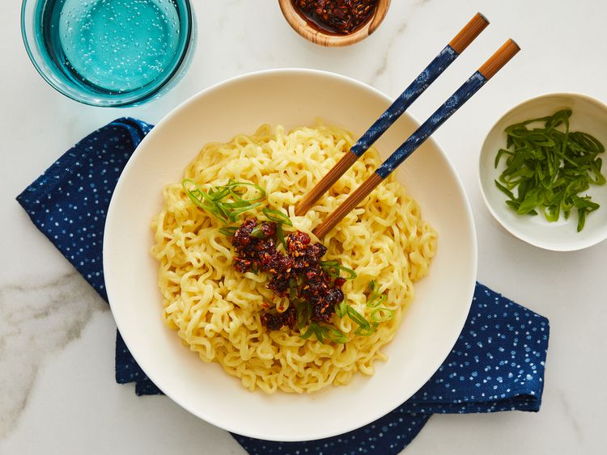

Cheesy ramen

Description
This is a simple, but delicious recipe on typical ramen noodles.
Ingredients
- 2 cups of water
- 1 package of any flavor ramen noodles
- 1 slice American cheese
Steps
- Gather all ingredients
- Bring water to boil in saucepan. Add ramen noodles and cook until tender, about 2 minutes
- Pour out water, then stir in seasoning packet and cheese
- Prepare ramen noodles in a bowl and enjoy